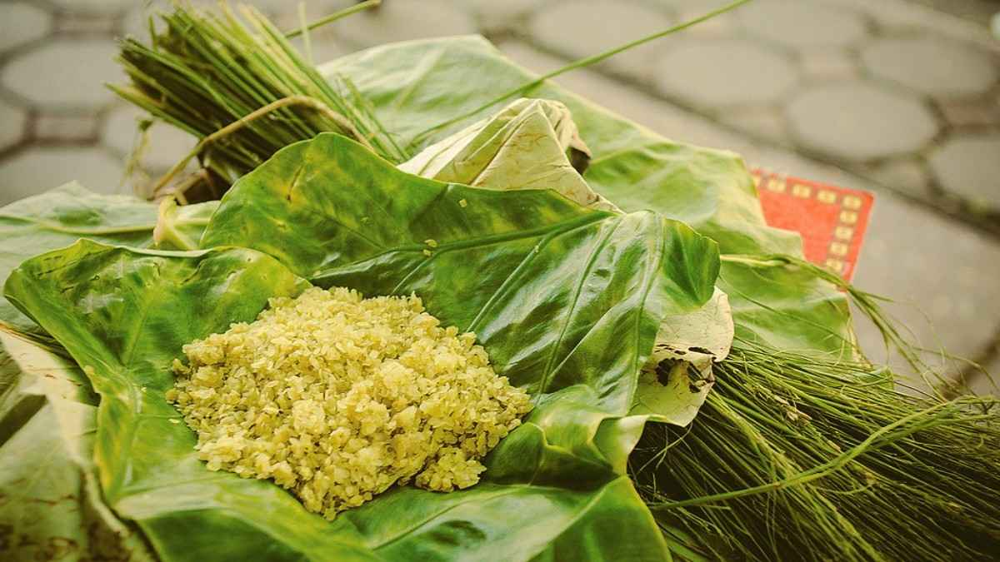
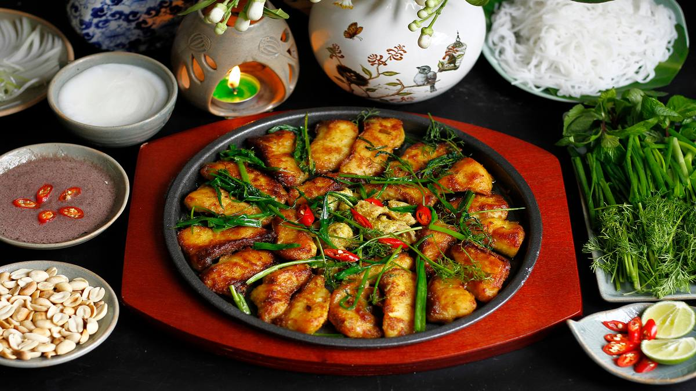

Đặc sản Hà Nội
Ẩm thực Hà Nội tinh tế, đậm vị truyền thống với nhiều món đã trở thành thương hiệu, gắn liền với ký ức và văn hoá Kinh kỳ.
Phở Hà Nội
Phở là món ăn truyền thống với nước dùng trong, thanh ngọt, bánh phở mềm, thịt bò hoặc gà tươi ngon. Đây là "linh hồn" của ẩm thực Hà Nội.

Bún chả
Bún chả gồm bún tươi, thịt nướng than hoa, nước chấm pha khéo. Đây là món ăn dân dã nhưng từng được cả nguyên thủ quốc tế thưởng thức.

Cốm làng Vòng
Đặc sản mùa thu, cốm làng Vòng xanh mướt, thơm dịu, thường được dùng để làm bánh cốm, chè cốm, trở thành món quà đặc trưng của Hà Nội.
Chả cá Lã Vọng
Món ăn trứ danh hơn 100 năm, cá lăng tẩm ướp riềng mẻ, nướng trên than, rồi rán với thì là, hành lá. Ăn kèm bún, rau thơm và lạc rang.
Bánh cốm & Bánh chả
Bánh cốm xanh dẻo, nhân ngọt thanh, thường dùng trong dịp cưới hỏi. Bánh chả nhỏ giòn, nhân mứt bí và thịt mỡ — món quà quê giản dị.

Trà sen Hồ Tây
Trà ướp trong gạo sen Hồ Tây, làm thủ công tỉ mỉ. Hương sen thanh khiết hòa quyện vị trà xanh — món quà tinh tế cho người sành trà.